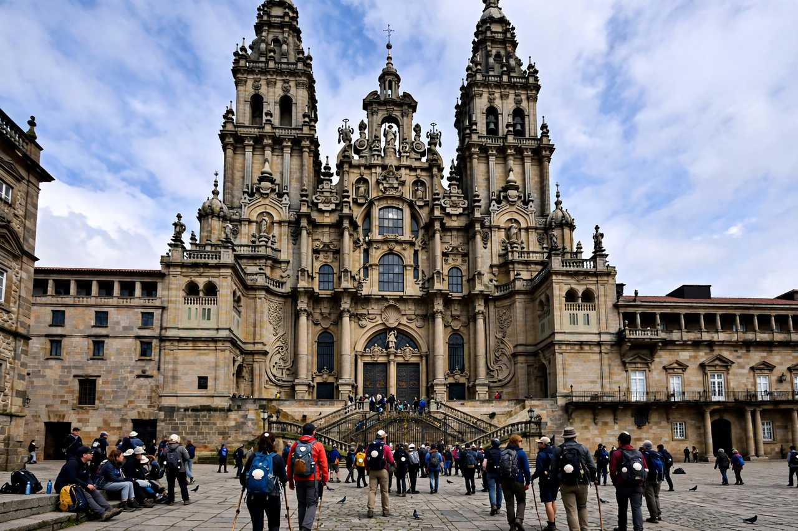

| Santiago de Compostela Cathedral | |
|---|---|
 The Obradoiro façade of the cathedral | |
| Location | Santiago de Compostela, Galicia, Spain |
| Built | 1075 – 1211 (Romanesque core); later additions |
| Style | Romanesque, Gothic, Baroque |
| Dedication | Saint James the Great |
The Cathedral of Santiago de Compostela is a Roman Catholic cathedral in Santiago de Compostela, Galicia, Spain, and the reputed burial place of Saint James the Great, one of the apostles of Jesus. It is the destination of the Camino de Santiago pilgrimage routes and one of the masterpieces of European medieval architecture.
According to tradition, the tomb of St James was discovered in the early 9th century by Bishop Theodemir of Iria Flavia, and a church was raised over it under Alfonso II of Asturias. The present cathedral was begun in 1075 under Alfonso VI, built in granite in the Romanesque style, and consecrated in 1211. Its sculptor-architect Master Mateo carved the Pórtico de la Gloria, a summit of Romanesque sculpture, completed in 1188. Later centuries added a Gothic cloister, Renaissance chapels and the great Baroque west front, the Obradoiro façade (1738–1750) by Fernando de Casas Novoa.
The cathedral is laid out as a vast pilgrimage church with an ambulatory around the shrine. Beneath the high altar a crypt holds the silver reliquary said to contain the apostle's remains; pilgrims traditionally embrace the statue of St James above the altar. The cathedral is famous for the Botafumeiro, a giant thurible nearly 1.6 m tall that is swung in great arcs across the transept by eight men (tiraboleiros) on major feasts.
Since the Middle Ages the cathedral has been the goal of the Camino de Santiago, today walked by hundreds of thousands of pilgrims each year. In Holy Years (when the feast of St James, 25 July, falls on a Sunday) pilgrims may enter through the Holy Door and gain a plenary indulgence. The cathedral and old town are a UNESCO World Heritage Site.